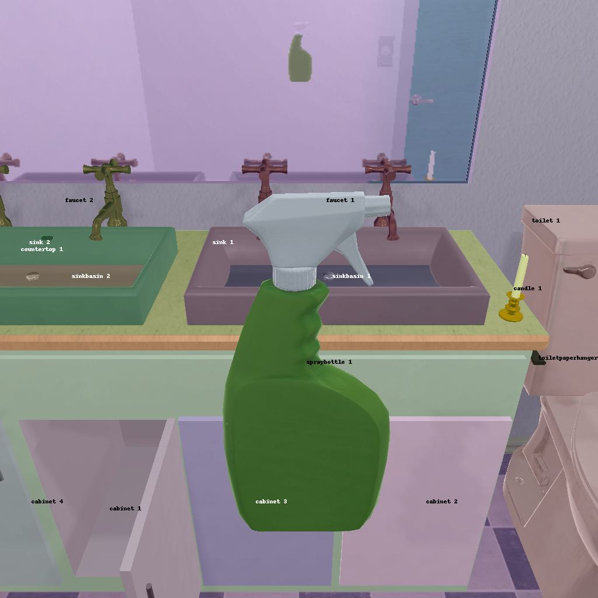

---------------------------------------------------------task: 9---------------------------------------------------------
--------------------------------------------------------------------------------------------------------------------------------------------------------------------
--------------------------------------------------------------------------------------------------------------------------------------------------------------------
Step:--------------------------------------------------------------------------18-------------------------------------------------------------------------------
----------------------------------------
VLM Prompt:
Image1:
Image2:
Image3:
**Instruction**
1. Analyze the provided image to identify all visible household objects, focusing on those relevant to the task description "put some soapbottle on toilet."
2. Use the analysis of the image and the task hint "The agent must find an object of the desired type, pick it up, find the correct location to place it, and put it down there." to answer the question: what is the most reasonable action in the choices for the task description "put some soapbottle on toilet"?
4. Decide and write the answer using the template: The answer is: (i): , where i is the real number. If there is no desired object in the image, search every place based on **Initial Observation** to find the object. And if no one is exactly correct, choose a similar answer.
**Initial Observation**
You are in the middle of a room. Looking quickly around you, you can see bathtub (1), bathtubbasin (1), toilet (1), cabinet (1-4), sink (1-2), countertop (1), sinkbasin (1-2), toiletpaperhanger (1), towelholder (1), garbagecan (1), handtowelholder (1)
**Answer Choices**
(1): go to bathtub 1
(2): go to bathtubbasin 1
(3): go to cabinet 1
(4): go to cabinet 2
(5): go to cabinet 3
(6): go to sink 1
(7): go to sink 2
(8): go to countertop 1
(9): go to sinkbasin 1
(10): go to sinkbasin 2
(11): go to toiletpaperhanger 1
(12): go to towelholder 1
(13): go to garbagecan 1
(14): go to handtowelholder 1
(15): close cabinet 4
(16): put spraybottle 1 in/on cabinet 4
(17): examine spraybottle 1
(18): examine cabinet 4
**Answer**
Let's think step by step by following the instructions.
----------------------------------------
----------------------------------------
Original Response:
First, analyze the image to identify all visible household objects. The objects relevant to the task description "put some soapbottle on toilet" are the toilet and any soapbottles.
From the initial observation, we know there's a toilet (toilet 1) in the room. However, there are no objects labeled as soapbottles in the images or the initial observation. The closest object we have is a spraybottle (spraybottle 1).
Using the task hint, the agent must find an object of the desired type, which in this case would be a soapbottle, but since there isn't one, we consider the spraybottle as a similar object. The agent must then pick it up, find the correct location, which is the toilet, and put it down there.
Based on this analysis, the most reasonable action from the choices provided would be to go to the spraybottle, which is already in hand in all images, and then put it on the toilet. However, there is no direct action to put the spraybottle on the toilet. The closest action we have is to examine the spraybottle, which might be a precursor to interacting with it.
The answer is: (17): examine spraybottle 1
----------------------------------------
----------------------------------------
>>> Refine Original VLM Response and Get Pure Action: examine spraybottle 1
----------------------------------------
-----------------------------------------------------------------
Running time: 18.06296992301941 seconds
Total Money: 5.56402
-----------------------------------------------------------------
-----------------------------------------------------------------
Text Observation:This is a normal spraybottle 1
-----------------------------------------------------------------
UNSUCCEED